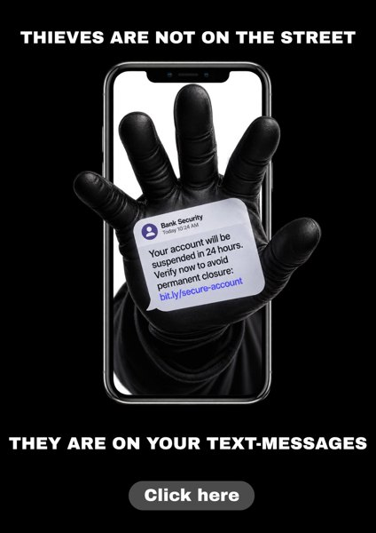
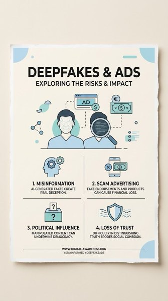
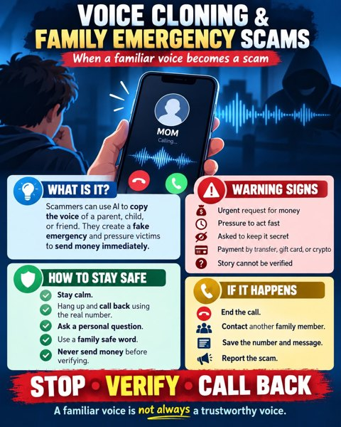
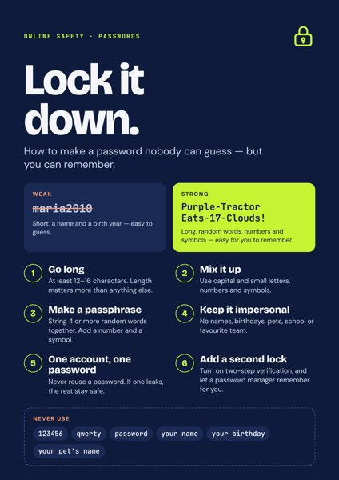
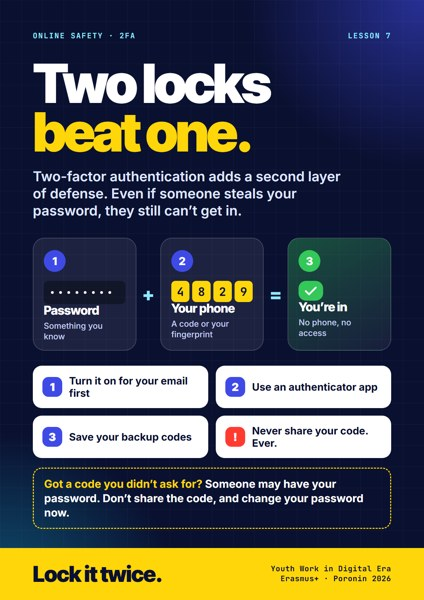
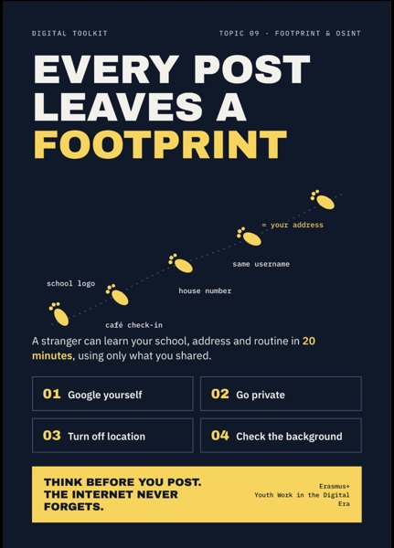
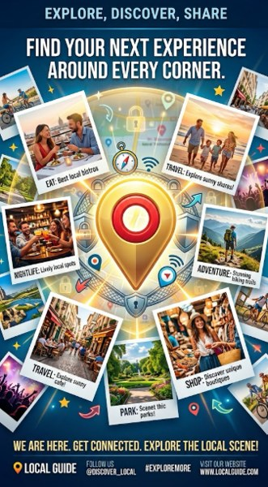
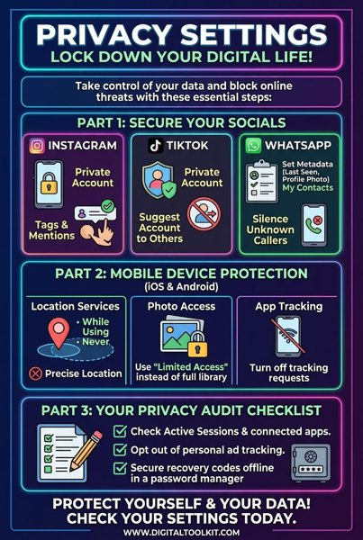
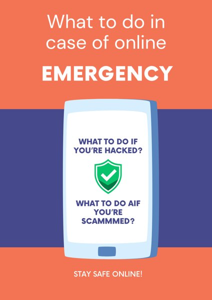

Wiadomości · Nieznany numer
Twoja paczka czeka na doręczenie. Wymagana jest dopłata w wysokości 1,99 €. Zapłać teraz przez poniższy link, aby paczka nie wróciła do nadawcy.
Szkolenie Erasmus+Poronin, Polska11–17 paź 2026
12 lekcji o bezpieczeństwie w sieci.
Lekcje









Każdą lekcję przygotował zespół uczestników. Dotknij plakatu, aby rozpocząć lekcję.
Szybka gra
Pięć wiadomości, które wyglądają jak prawdziwe – wszystkie pochodzą z lekcji. Oszustwo czy nie? Zdecyduj szybko, jak w prawdziwym życiu.
1 / 5 · Wynik 0
Wiadomości · Nieznany numer
Twoja paczka czeka na doręczenie. Wymagana jest dopłata w wysokości 1,99 €. Zapłać teraz przez poniższy link, aby paczka nie wróciła do nadawcy.
Połączenie przychodzące · „Daniel”
„Mamo, pomóż mi! Miałem wypadek. Pilnie potrzebuję pieniędzy!”
Rekruter · 2 min temu
Gratulacje, masz tę pracę! 3000 € miesięcznie za pracę z domu. Prosimy o wpłatę 150 € za materiały szkoleniowe i przesłanie skanu paszportu.
Ogłoszenia · Nowy kupujący
Cześć! Biorę, bez pytań. Zapłacę całą kwotę z góry, od razu. Podeślij dane do płatności, a mój kuzyn odbierze rzecz dziś wieczorem.
Weryfikacja · przed chwilą (właśnie się logujesz)
Twój kod logowania: 482 913. Nigdy nikomu nie podawaj tego kodu.
Każda z tych wiadomości pochodzi z lekcji na tej stronie.
Wszystkie 12 lekcji
Dwanaście lekcji w czterech grupach – dla osób pracujących z młodzieżą, edukatorów i młodych ludzi.
O projekcie